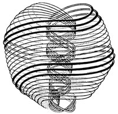
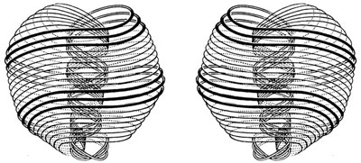
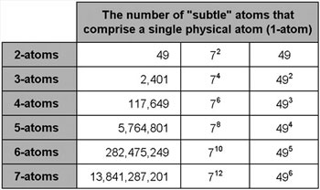
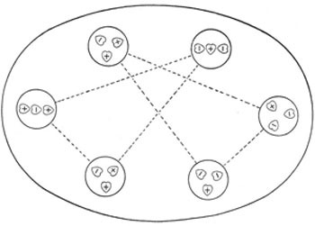
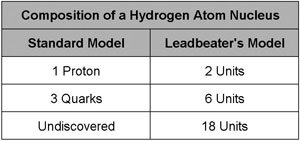
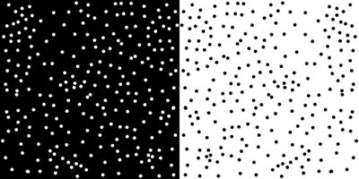

Introduction
For many decades,
scientists have been
trying to devise a
single unified theory to
explain all known
physical phenomena,
but a model
that
appears to unite
the seemingly
incompatible String
Theory and Standard
Model
has existed for 100
years. It
described baryons,
mesons, quarks and
preons over 50 years
before conventional
science. It stated that
matter is composed of
strings 80 years before
string theory. It
described the existence
of anti-matter 30 years
before conventional
science. It described
the Higgs field over 50
years before Peter
Higgs. It described the
existence of isotopes 5
years before
conventional science.
Could this be the
beginning of a Theory of
Everything - the holy
grail of modern physics?
Quantum Foam
Quantum foam, also known
as space-time foam, is a
concept in quantum
physics proposed by
Nobel physicist John
Wheeler in 1955 to
describe the microscopic
sea of bubbling
energy-matter. The foam
is what space-time would
look like if we could
zoom in to a scale of 10-33
centimetres (the Planck
length). At this
microscopic scale,
particles of matter
appear to be nothing
more than standing waves
of energy. Wheeler
proposed that minute
wormholes measuring 10-33
centimetres could exist
in the quantum foam,
which some physicists
theorise could even be
hyper-spatial links to
other dimensions. The
hyper-spatial nature of
the quantum foam could
account for principles
like the transmission of
light and the flow of
time. Some scientists
believe that quantum
foam is an incredibly
powerful source of
zero-point energy, and
it has been estimated
that one cubic
centimetre of empty
space contains enough
energy to boil all the
world's
oceans.
So, if we could describe
a microscopic standing
wave pattern that
appeared particle-like
and incorporated a
vortex within its
structure, we might have
the basis for a theory
that could unite all the
current variants in
modern physics. Figure 1
appears to meet these
criteria – it is a
drawing of a subatomic
particle reproduced from
Occult Chemistry
by Charles Leadbeater
and Annie Besant, which
was first published in
1909, although a similar
diagram was published in
a journal in 1895.
Leadbeater explains that
each subatomic particle
is composed of ten loops
which circulate energy
from higher dimensions.
Back in 1895, he knew
that physical matter was
composed from
"strings"
– 10 years before
Einstein's
theory of relativity and
80 years before string
theory.

Figure 1 –
Subatomic particle
String Theory and the
Standard Model
According to Leadbeater
these particles are
composed of 10 vibrating
strings, which are in
turn composed of even
smaller particles, which
are in turn composed of
even smaller strings,
etc… This suggests that
the seemingly
incompatible standard
model and string theory
may in fact be two sides
of the same coin.
String theory proposes
that everything is
composed of incredibly
minute strings or loops
of energy-matter
vibrating in ten (or
more) dimensions. Our
brains can only
comprehend four
dimensions – the three
spatial dimensions
(length, width and
height) plus one
temporal dimension
(time). So according to
string theory, six (or
more) hidden spatial
dimensions must exist
beyond our perception.
It is interesting to
note that the ancient
cosmologies of eastern
religions are based on
seven planes of
existence, with our
physical plane being the
lowest.
According to Leadbeater
the fundamental particle
shown in Figure 1 is
merely the fundamental
particle of our physical
dimension (plane 1) –
for this reason I will
refer to it as the
1-atom. 1-atoms are so
small that modern
science has not yet
detected them, but they
were theorised back in
1974 by Jogesh Pati and
Abdus Salam, who
referred to them as
"preons".
According to Leadbeater,
two varieties of 1-atom
exist (positive and
negative), each with the
same basic structure but
the spirals spin the
other way in the
negative variety (see
Figure 2). This is due
to zero point energy
flowing down through the
negative atoms and up
through the positive
atoms.

Figure 2 –
Positive and negative
1-atoms
The negative particles
are not electrons; they
are antiparticles. A
particle of antimatter
has the same mass and
magnitude as an
equivalent particle of
regular matter but an
opposite charge. For
example, the
antiparticle of an
electron is a positron.
A positron is identical
to an electron in every
way except that it has a
positive charge. The
existence of antimatter
was not predicted by
conventional science
until 1928 and confirmed
experimentally in 1932,
yet Leadbeater knew
about it over 30 years
earlier.
Even More Fundamental
1-atoms are far from
being the ultimate
fundamental particle
from which everything in
the universe is
composed. Each 1-atom is
composed of ten separate
"strings"
(closed loops)
which are in turn
composed of coiled loops
of even smaller
particles – see figure
3.

Figure 3 – The
microstructure of
"strings"
in a 1-atom
1-atoms are the
fundamental particles of
the physical plane
(plane 1), 2-atoms are
the fundamental
particles of plane 2,
3-atoms are the
fundamental particles of
plane 3, etc. According
to Leadbeater, each
1-atom is composed of
forty nine 2-atoms, each
2-atom is composed of
forty nine 3-atoms, each
3-atom is composed of
forty nine 4-atoms, etc.
The matter of the lower
planes is composed of
the matter of the higher
planes, so all the
planes can
interpenetrate each
other and occupy the
same space. Figure 3
shows the number of
fundamental atoms from
the various planes that
make up one fundamental
atom of the physical
plane.

Figure 4 – The
number of
"subtle"
atoms in one 1-atom
Phases of Matter
In addition to the four
phases of physical
matter (solid, liquid,
gas and plasma)
recognised by modern
science, the alchemists
of old recognised a
fifth element. They
believed everything was
created from the five
elements: Earth (solid),
Water (liquid), Wind
(gas), Fire (plasma) and
Aether (ether). They
recognised aether as a
phase of subtle matter
that filled all space
and supported the
propagation of
electromagnetic waves
(e.g. light and
magnetism). According to
Leadbeater there are
actually seven phases of
physical matter; and
where that ends
different kinds of even
subtler matter begin.
The three lowest phases
of physical matter (1:1,
1:2 and 1:3) broadly
correspond to solid,
liquid and gas. The four
higher phases of
physical matter (1:4,
1:5, 1:6
and
1:7) are etheric, and
are what science refers
to as subatomic
particles or dark
matter. 1-atoms belong
to the 1:7 phase and
combine in many
different molecular
permutations to produce
the hundreds of
sub-atomic particles and
chemical elements known
to science.
Figure 5 depicts the
subatomic structure of a
hydrogen atom as
described by Leadbeater
a hundred years ago. The
nucleus is composed of
six units (in two groups
of three), and each unit
is composed of three
1-atoms. According to
conventional science the
nucleus of a hydrogen
atom is composed of only
three units called
quarks.

Figure 5 – The subatomic
structure of a hydrogen
atom (not to scale)
Figure 6 shows that
Leadbeater’s model has
precisely twice as many
particles as the
standard model suggests.
This is because 50% of
the 1-atoms in
Leadbeater’s model are
negatively charged
(antimatter).

Figure 6 –
Subcomponents of a
hydrogen nucleus
Conventional science
doesn't consider
it possible for
antimatter to be a
constituent part of
physical matter because
the matter and
antimatter would
annihilate each other if
they ever touched, but
they have no reason to
touch under normal
circumstances. According
to Leadbeater, even the
10 strings of a 1-atom
never touch each other.
If a positive 1-atom
(matter) did come into
contact with a negative
1-atom (antimatter) each
would breakdown into 49
2-atoms. 2-atoms are so
subtle that conventional
science regards them as
pure energy (dark
energy).
Conventional science
cannot account for the
disappearance of all the
antimatter that was
produced in the Big
Bang. According to the
Big Bang theory, equal
amounts of matter and
antimatter were created
at the birth of the
universe, but scientists
can’t explain why so
little of it exists
today. Could it be that
all the
"missing"
antimatter is hidden
within regular matter?
Figure 7 depicts the
subatomic structure of a
hydrogen atom (in the
1:3 gaseous phase) and
its decomposition
through four etheric
phases:
-
The
1:4-molecules are
baryons.
-
The
large 1:5-molecules
are unstable mesons.
-
The
small 1:5-molecules
and the 1:6-phase
molecules are
quarks.
-
The
1:7-atoms (or
1-atoms) are preons.
Leadbeater did not state
what the membranes
surrounding the
molecular structures are
composed of, but they
are probably 2-atoms or
3-atoms.

Figure 7 – The
decomposition of
hydrogen
Figures 1, 2, 3, 5 and 7
are extracted from
Occult Chemistry by
Charles Leadbeater and
Annie Besant. The book
depicts the subatomic
structure of every
element in the periodic
table from Hydrogen to
Uranium, including
various isotopes (atoms
with the same atomic
number but different
mass numbers).
Leadbeater knew that
isotopes existed in 1907
– five years before
conventional science
discovered them.
The Higgs Field
The Higgs field is a
quantum field that is
believed to permeate the
entire universe. The
theory was proposed by
physicist Peter Higgs in
the 1960s to account for
the fact that that
particles have mass.
Particles of matter that
interact with the Higgs
field are subject to
resistance, which shows
itself as mass.
Particles that interact
strongly with the Higgs
field are heavy, while
those that interact
weakly are light. The
Higgs field has been
compared to treacle
through which every
particle in the universe
has to
"swim".
Small particles can
easily move through the
Higgs field so they
appear to have
negligible mass, but
large particles create
more drag so appear to
be heavier.
Leadbeater described
something very similar
to the Higgs field over
50 years earlier in
Occult Chemistry. He
explained that an
incredibly dense
substance, which he
called koilon, permeates
the entire universe, and
that every atom of
matter corresponds to an
empty bubble in this
incredibly dense
substance. It helps to
think of the universe as
a mirror image of
another reality (the
anti-universe) where
empty space is not empty
but is filled with dense
koilon, and where
particles are not matter
but are empty bubbles.
If our universe is
positive existence, then
the anti-universe is
negative existence (see
Figure 8).
When a particle moves,
its corresponding bubble
must move through the
dense koilon and this
causes resistance. This
resistance manifests as
inertia in the particle,
and inertia gives the
appearance of mass.
Large particles
correspond to large
clusters of bubbles
which are subject to
greater resistance,
giving the appearance of
a large mass. Small
particles correspond to
small clusters of
bubbles which are
subject to less
resistance, giving the
appearance of a small
mass.

Figure 8 – Empty bubbles
in koilon in the
anti-universe correspond
to particles of matter
in our universe
Bose-Einstein Condensate
The koilon
(or
Higgs field) that fills
the anti-universe is an
incredibly dense,
homogenous and fluid
"sea"
of negatively existing
matter. Everything is
reversed in our
universe, so matter is
incredibly subtle in the
higher planes and
increasingly dense in
the lower planes. It
therefore follows that
something corresponding
to the incredibly dense,
homogenous and fluid
"sea"
of koilon should exist
below the physical
plane. In 1924 Satyendra
Bose and Albert Einstein
predicted the existence
of just such a phase of
matter – they called it
Bose-Einstein condensate
(BEC). But it was not
until 1995 that the
technology existed for
it to be produced in a
laboratory. Eric Cornell
and Carl Wieman, of JILA
at the University of
Colorado, cooled
rubidium atoms to less
than 170 billionths of a
degree above absolute
zero, which caused the
individual atoms to
condense into a
collective
"superatom"
which behaved like a
single fluid entity.
Bose-Einstein condensate
is not physical matter
but something just below
it. It is a phase of
matter that has
completely different
properties to any other
kind of matter known to
science.
Atoms in a gas at room
temperature move at
about 1,000 miles per
hour. They slow down to
about 1 metre per hour
as the temperature
approaches absolute
zero, but the atoms in a
BEC barely move at all.
When the atoms stop
vibrating they are able
to share the same space,
since atoms are
99.999999% empty anyway.
Bose-Einstein condensate
can only exist at
absolute zero (-273°C);
a temperature so cold
that the energy aspect
of energy-matter becomes
zero. Absolute zero is
the baseline that
prevents creation from
descending any lower –
it is quite literally
the bottom of the
universe.
The Sanskrit word
"Avichi"
(meaning waveless)
describes the lowest
possible state of
existence and clearly
refers to the non-vibrational
state of Bose-Einstein
condensate. The ancient
Hindu scripture the
Srimad Bhagavatam 5.26.5
states that the
"Garbhodaka
Ocean"
lies at the bottom of
the universe – this
clearly refers to the
"sea"
of Bose-Einstein
Condensate that exists
below the physical
plane. In Kabbalah,
"Klipoth"
(the abyss that lies
below the physical
plane) also refers to
the Bose-Einstein state.
It seems that
conventional science can
learn a lot from
unconventional sources! |